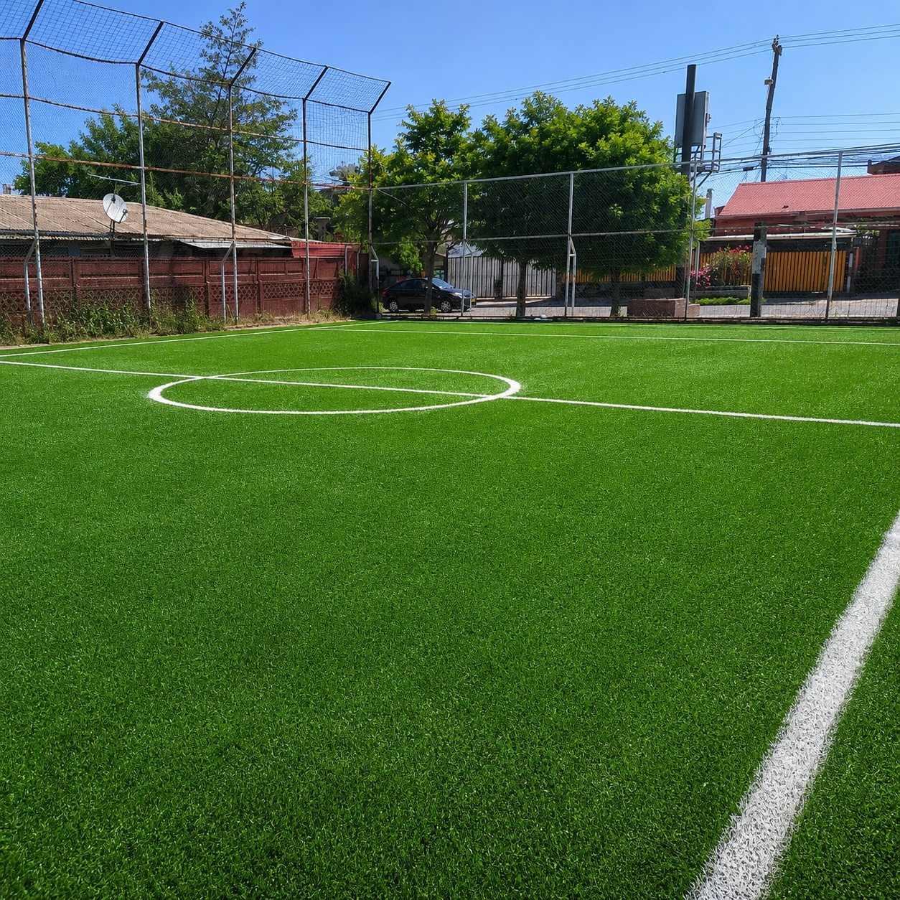

Plan Programado
Mantención Anual
Alarga la vida útil de tu pasto sintético con nuestro plan de mantención programada: peinado, reposición de caucho y control de nivel óptimo para complejos deportivos.
- Visitas programadas durante el año
- Reposición de material según desgaste
- Informe técnico de estado de la cancha
